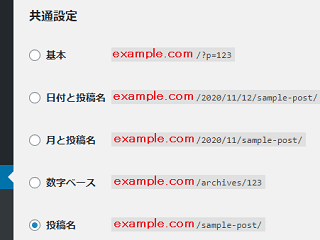
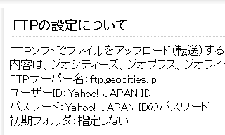

無料ホームページからレンタルサーバーへの引越方法
ジオシティーズやニフティなどの無料ホームページスペースから、独自ドメインを取得してレンタルサーバーへサイトを引越す際の手順についてご紹介します。
以下の例は無料ホームページで作成していた「静的なHTMLサイト」の手順のため、「.html」形式ではない動的な無料ブログの場合は以下の手順では移転できません。
- 無料ホームページ「.html」 → 独自ドメイン「.html」へ
- 無料ブログ「/blog」や「/?=p123」など → WordPressがおすすめ
動的なサイトの場合、データベースの引っ越しが必要となるため、WordPressなどのCMSをサーバーに設置して移転することをおすすめします。WordPressの場合、URLの形式をカスタマイズできるため、現在のサイトと同じURL形式で運営できるはずです。
■WordPressの例

どのみち移転元のURLが使えなくなる場合、新しいドメインへ転送設定をしてもリンク切れの発生は避けられないため、それほどこだわる必要はないかと思いますが、同じ形式にした方がスムーズに移転できるはずです。
以下、無料ホームページスペースからの移転方法についてご紹介します。
移転先の新URLとなるドメインの取得とサーバー契約
まずは、引越先のURLとなるドメインの取得とサーバー契約を済ませておきましょう。
無料ホームページスペースから引越しをする場合、運営側から提供されていたURLは使用できなくなるため、自分でドメインを取得して新しいURLを自分で確保する必要があります。
【引越先のサイト側】
①新サイトのドメイン（URL）を取得する
→ 独自ドメインの取得方法
②新サイトのレンタルサーバー（ホームページスペース）を契約する
→ 個人向けレンタルサーバー比較
③ドメインのDNS設定を済ませておく
→ 独自ドメインの設定方法
レンタルサーバーを契約した場合でも、無料ホームページスペースと同様にサーバー会社からサブドメイン（URL）を無料で提供されるケースもあるため、独自ドメインの取得は必ずしも必須ではありません。
その場合でもURLをサーバー会社から借りて使用することになるため、いずれそのサーバーを引っ越す際には、再度、サイトのURLが変更になってしまいます。その点、自分でドメインを取得してさえいれば、サイトのURLが変更になることはありませんので、必ず自分でドメインを所有されることをおすすめします。
引越先のサーバーへホームページファイルをアップロード
用意した引越先のサーバーへ、旧無料ホームページのファイルをアップロードすることになりますが、まずは旧無料ホームページのファイルをパソコン側へダウンロードしておきましょう。
【旧サイト側】
④無料ホームページからFTP接続などでファイルをダウンロードする
→ FTP接続によるアップロード方法
公式サイトのヘルプページなどでFTP接続の設定方法が公開されているはずです。

このダウンロードした旧ホームページファイルについては、移転先のサーバーではURLや階層が変わるため、そのままではアップロードできません。
例えば、無料ホームページスペースにてサブフォルダのURLが提供されていた場合、サイトのトップページは「www.example.com/サイト名/」などとなっているはずです。
けれども、自分でドメインを取得した場合はサブフォルダではなく、ルートディレクトリの「www.example.com」にそのまま作成することになります。
当サイトの場合、以前まではジオシティーズの「www.geocities.jp/サイト名/」で作成しておりましたが、現在はレンタルサーバーを契約して「www.homepage-tukurikata.com」のドメインを取得しURLを変更しております。
そのため、移転先では「www.homepage-tukurikata.com/サイト名/」のように、/サイト名/にてフォルダ分けをせず、「www.homepage-tukurikata.com/」のドメインをそのまま使用することになるため階層がひとつ上になります。
この場合、相対リンクでトップページへのリンクを「../」などと指定していた場合、階層がひとつずれるため、コンマひとつで「./」のように修正しないとリンク切れが発生してしまいます。そのため、一括置換のツールなどを使い、内部リンクをすべてひとつ上の階層に修正してからアップロードするとよいでしょう。
⑤新サイトのドメインに合わせ、フォルダの階層を修正する
→ フォルダ分けによる階層化
→ index.htmlとトップページの関係
→ public_htmlフォルダとは？
加えて、相対リンクではなく、絶対リンクで内部リンクを指定していた場合も、旧サイトのファイルをそのままアップロードしてしまうと内部リンクが旧サイトのURLのままとなってしまうため、すべて修正する必要があります。
⑥内部リンクのURLを新しいURLに書き換える
例えば、トップページへの内部リンクを絶対リンクで「http://www.geocities.jp/サイト名/」などと指定していた場合、新しく取得したドメインの「http://www.homepage-tukurikata.com」へと書き換える必要があります。
また、sitemap.xmlを設定している場合も新しいURLに修正してからアップロードしておきましょう。新サイト側には旧URLがひとつも含まれないよう、一括置換ツールなどを使って全て修正されることをおすすめします。
【引越先のサイト側】
修正が終わりましたら、移転先のレンタルサーバーへファイルをアップロードします。
⑦修正済みファイルを新サーバーへアップロードする
取得したドメインの設定が正しく済んでいれば、この時点で新しいサイトが表示されるはずです。（※ドメインの設定がネット上に反映するまでに数日程度かかることもあります。）
外部サイトからのリンクを新しいURLへ修正してもらう
新サイトが表示されましたら、友人のサイトなどにURLを変更した旨をつたえ、新しいURLへリンクを変更してもらうことをおすすめします。自分で管理しているサイトからのリンクについても、できるだけURLを変更しておきましょう。
また、ヤフーカテゴリに登録されている場合なども、URL変更の申請もしておくことをおすすめします。
旧サイト側での301リダイレクト設定
この時点では新旧ふたつのホームページがネット上に重複して存在してしまうため、旧サイトに301リダイレクトによるアクセスの転送設定をして新サイトに統一しておくことをおすすめします。
「新サイトはこちら」のような形で旧サイトに新サイトのURLを張っておくだけでは、今までの被リンクやサイト運営年数などの資産が受け継がれません。
必ず301リダイレクト設定をしておくようにしましょう。
【旧サイト側】
旧サイト側で.htaccessやメタタグを書き換え、新サイト側へリダイレクト設定をして統一します。

無料ホームページスペースによっては、.htaccessによる301リダイレクトが使用できないケースもあります。その場合は多少の手間がかかりますが、metaタグによる「0秒」リダイレクトで転送設定をしておくことをおすすめします。
さらに、URL正規化の「rel="canonical"」タグも旧サイト側に設定しておくとよいでしょう。
⑧旧サイトから新サイトへ301リダイレクト設定をする
→ リダイレクト設定によるURLの転送方法
この301リダイレクト設定をしておけば、旧サイトに訪問者がアクセスした際、自動的に新サイトへと転送されるようになります。また、旧サイトへ張られていた被リンクについても新サイトへ受け継がれることになります。
もし旧サイトからの転送設定をしなかった場合、コンテンツの重複による検索エンジンペナルティーや検索順位下落などの原因ともなり、アクセス数が減少してしまう可能性があるので注意しましょう。
ちなみに、Google Search Consoleのアドレス変更ツールを使用すれば、サイトを移転したことを明確に通知できますので、こちらも合わせて設定しておくとよいでしょう。
→ Google Search Consoleに登録して最適化
Google Search Consoleにて新旧両方のサイトを登録し、旧サイトの方へ移転した設定をしておけば、グーグルへ明確にサイトの引越を伝えることができます。
追記：ヤフージオシティーズが2019年3月末でサービス終了の予定
ヤフージオシティーズが終了となりますが、「2019年3月末」でホームページが表示されなくなるため、上記のhtmlファイルに直接記述した場合のリダイレクト設定はその時点で解除されるはずです。
けれども、公式ホームページ上から「ホームページの転送設定」をした場合、サイトが表示されなくなった以降も「2019年9月30日」までは転送してくれるようです。
詳細はこちらのページをご参照ください。
→ ヤフージオシティーズ終了後の転送設定
移転後も旧無料ホームページは削除しない
上記の301リダイレクト設定をした旧無料ホームページも必ず保持しておきましょう。
旧サイトを削除してしまうとリダイレクト設定が解除され、旧サイトへ張られたリンクがリンク切れになってしまいます。この場合、サイトの被リンクや運営歴が引き継がれなくなってしまうので注意しましょう。
けれども、サービス終了でサイトが削除されてしまう場合などはこの301リダイレクト設定ができません。
2016年にニフティの無料ホームページが終了となりましたが、移転通知機能が用意されていたとしても、深い階層のページではリンク切れとなってしまうケースもありますので、サービス終了でサイトが削除される場合は検索順位の下落やアクセス数が減少してしまうケースが多いです。
ホームページ引越し後の確認方法
訪問者へホームページを引越したことを伝えるには301リダイレクトで転送設定をしておくだけで十分ですが、検索エンジン側でも正しく認識されているかどうかを確認する必要があります。
これを確認するには２週間から１か月程度の時間をおき、グーグルで「info:旧ホームページのURL」で検索してみてください。サイト情報に新しいホームページのURLが表示されていれば、引越が完了です。

【追記：2019年3月でこの「info:コマンド」は廃止になりました。】
また、グーグルで「site:新しいドメインのURL」で検索すれば、どのくらいのページ数が登録されているのかチェックすることができます。詳細はこちらのページをご参照ください。
サイトのページボリュームが多い場合、旧サイトから新サイトへ完全に置き換わるまでには時間がかかりますので、時間をおいてからチェックするとよいでしょう。
加えて、Google Analyticsのアクセス解析を使用している場合、アナリティクス側でURLの変更もしておきます。旧サイトで使っていた解析用のタグについては張り替える必要はありません。
新しく登録してタグを張り替えてもよいかと思いますが、旧サイトのタグをそのまま使用すれば、以前までのデータを引き継げるので、新サイトでもそのまま使用されることをおすすめします。